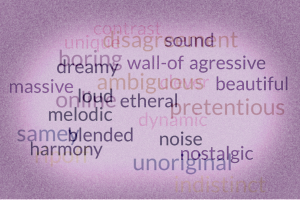

For my final map I wanted to make it stand out and have it be sort of a
look into the future. However, in order to curate it I needed some help!
I first had to create a reddit account, a forum social media that encourages discussions
of niche topics, like Grungegaze.
I was also given the opportunity to ask one of my favorite muscians, Daygraves
about his opinion on the genre. More on that later!
The map itself is probably my most experimental one yet.
In class we were told to challenge the idea of what a map was, and base it off
its 'mappiness', well I decided to take that idea and flip it on its head.
I took words used to describe the genre both postively, and negatively to create
a map that might hold the future to the genre.

I intentionally made the map look distorted and hazzy to:
1.Make a visualizaiton of the music itself
2. Showcase the uncertain future of the genre.
Also, if you have a moment I reccomend checking out the music u/nerdyoutbe linked to,
they made a cool Grungegaze Demo under the name 'stuck in ice'! I was unable to get the embed to work before the due date